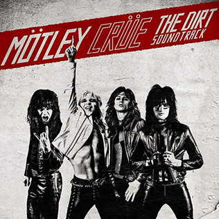
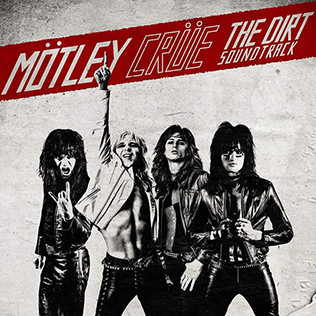

Retrospection
The Dirt is a biographical film that illustrates the upbringing of the iconic glam rock band Mötley Crüe. It shows the early years of each member before they joined the band, and what brought them to where they are now.
The Dirt is a biographical film that illustrates the upbringing of the iconic glam rock band Mötley Crüe. It shows the early years of each member before they joined the band, and what brought them to where they are now.
